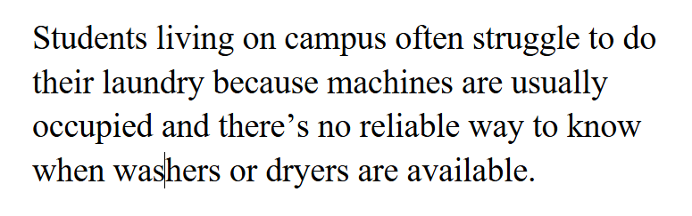
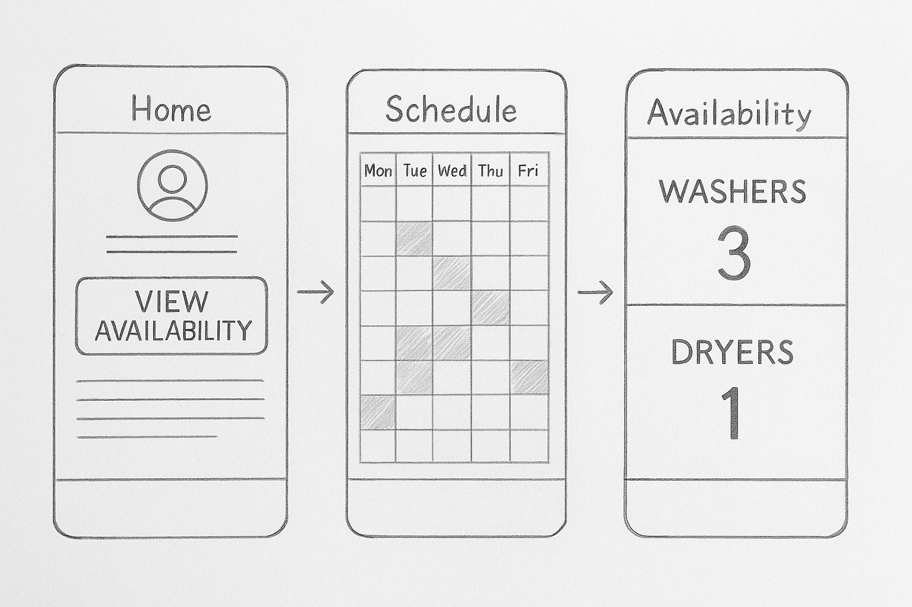

Highlighted projects
Problem Statement
Students living on campus often struggle to do their laundry because machines are usually occupied and there’s no reliable way to know when washers or dryers are available.
Affinity Diagram

This diagram groups ideas for improving the on-campus laundry experience into categories such as machine availability technology, user notifications, preventing laundry abandonment, behavior improvements, and app interface features.
Sketches
Sketches showing main screens and navigation flow for our project — includes home screen and schedule view.